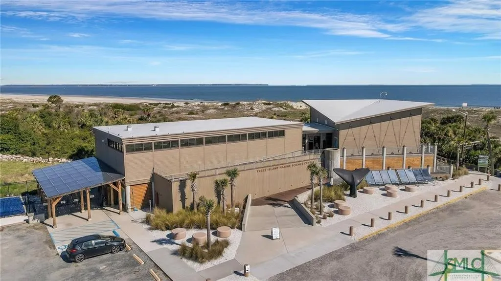

Photo pair 1


geometrically_supported
Shared-image context: No cross-listing duplicate found by the current three-hash test
Hash / geometric comparison evidence
{
"hash_hamming": {
"dhash": 3,
"phash": 4,
"center_phash": 0
},
"hash_min": 0,
"priority_policy": "obvious_v1_both_phashes_le_6_nonshared",
"exact_hash_hamming": {
"phash": 4,
"center_phash": 0
},
"orb_ransac": {
"score": 0.6940901408450704,
"detail": {
"inliers": 702,
"ratio_matches": 710,
"coverage": 0.4260216006651583,
"homography": [
[
0.9965704510501665,
-0.001878594607466716,
0.8117225595775045
],
[
-0.0005343654086857137,
0.9974382338796327,
-0.5244717508453356
],
[
-1.339870725428263e-06,
-7.5578106105363345e-06,
0.9999999999999999
]
]
},
"comparison_ms": 7.7721039997413754,
"feature_lookup_or_extraction_ms": 38.46390599210281
}
}